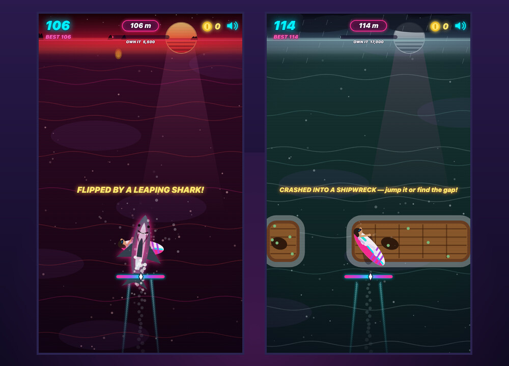

What it is
An endless surfer that runs up the screen rather than across it. The ocean scrolls down, you sit in the lower third, and everything that wants to end your run appears on the horizon and arrives in a second or two.
The genre it comes from is built on one-touch input — hold to climb, release to drop — and that single input is the ceiling on how deep those games can go. This one spends both thumbs instead.
Left thumb is the board. Right thumb is your body. Turning banks the board into the turn, so a hard steer has to be caught with the other hand.
Staying up is the game
- Balance is the failure state, not a health bar. Near upright the board self-rights. Past that it is an inverted pendulum: the further it leans, the faster it goes over. Chop, whitewater, random gusts, landings and your own steering all push at it.
- There is a moment to save it. Past the red line you get 0.45 seconds and the word RECOVER! before you are in the water.
- Doing nothing is not an option for long. With no input at all a run survives about forty seconds of chop at the start, and about twelve by nine hundred metres.
Air, and what to do with it
Wave crests are steerable ramps — ride into one and pump for height. Lean freezes while you are airborne, which is the whole point: it frees the right thumb to spin and grab.
- Sixteen tricks off two thumbs — spins by the 180, Indy and Method grabs, kickflips and shove-its, back- and frontflips off both thumbs together. A single-thumb flick waits a tenth of a second for the other one, so a slightly staggered pull still reads as the backflip you meant.
- Land clean or don't. More than forty degrees off, or still mid-flip, is sketchy: forty percent of the points, a hard kick to your lean, and your streak gone. A clean landing pays tricks and airtime multiplied by combo and streak, and gets ranked NICE → RAD → SICK → GNARLY → LEGENDARY.
- Neon rails float on the water in straights, S-bends and snakes. Ride the entry chevron or land anywhere along one. Grinding lifts you out of reach of everything below, and the multiplier steps up every 0.6 s — but a rail has no self-righting and gets wobblier every second, so a good rider lasts about ten of them. Hop to another within 1.6 s for a TRANSFER that carries the multiplier over.
What is trying to end it
Fin sharks track your lane until they are nearly level, then commit. Shipwrecks are wide hulls with a single gap — and there are sometimes coins sitting in the gap, which is not generosity. The ambush shark is the nasty one: a grey dot shadows you for 1.4 s, locks on for 0.6 s behind a dashed red ring, and then erupts. Dodge it close and you are paid a CLOSE CALL for the trouble.
Almost everything can also be jumped. Come down on a shark and you bonk it — three hundred points, a bounce, and one shark floating belly-up behind you.

Nine beaches to own
The game opens on a pixel-art overworld — two coastlines either side of a snaking channel, with a road, plank bridges, drifting clouds and three boats, one of them under a pink sail. The nine beaches sit along the coast as numbered shield badges, from one-star Sunset Shallows round to five-star Typhoon Reach.
Each one has a score threshold. Beat it in a single run and you own the beach: a chrome banner and confetti mid-run, and a gold crown on the map that stays there. Every beach also has its own palette, horizon and hazard weighting — Neon Pier is thick with rails, Shark Alley with sharks, Typhoon Reach with all of it at once.
The Jump Codex
A polaroid album of every trick in the game. When one registers in mid-air the game takes an actual photograph — a small snapshot read straight off the live canvas at the moment the surfer is painted, before the HUD and the scanlines go on. Land it clean and the shot is kept if it is your first or your best, announced with a flash, a shutter click and a polaroid sliding in from the side. Five clean landings master a trick and stamp the card in gold.
Where it stands
Finished and playable: nine beaches, sixteen tricks, the codex, and the map that remembers what you own. Built for a phone in portrait, and careful about it — the thumb sticks are clamped above a safe band at the bottom of the screen so that a full downward push can never turn into an Android home-swipe. On a desktop it falls back to WASD, the arrow keys and the space bar.
One HTML file, no build and no dependencies. Everything you see is drawn to a canvas, including the overworld, which is generated procedurally into an offscreen buffer as six-pixel cells and then baked once.